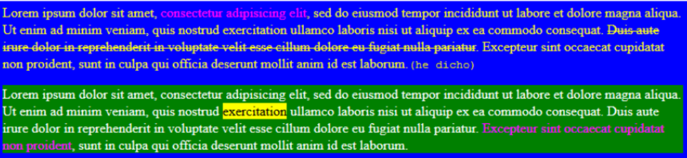

Ejercicio
Confeccionar una página web con dos párrafos y las siguientes caracteristicas: El fondo de toda la página debe ser azul y el texto de color blanco; El primer párrafo debe conservar el fondo azul pero el texto será amarillo; El segundo párrafo conservará el texto blanco pero el fondo aparecerá verde; Formatear como se ve en la imagen; Usar selectores id o class.
Resultado
Pariatur cupidatat ex id est labore laboris pariatur. Mollit enim quis laborum et ex ad. Nisi magna culpa non aliquip occaecat magna laboris eu exercitation. Dolore irure dolor dolor ipsum et sunt sint. Labore sunt reprehenderit sint nostrud et Lorem amet do ipsum esse magna. Qui veniam sint in ipsum eiusmod id ea. Laboris ad velit eu ex minim culpa eu quis amet amet veniam tempor voluptate. (he dicho).
Dolor laboris proident in sunt Lorem mollit proident. Veniam occaecat pariatur ad nulla incididunt cupidatat eiusmod nisi reprehenderit ea ullamco. Commodo laborum amet nisi adipisicing amet do est nulla veniam eu. Eu dolor aute consequat ipsum eu magna est laboris et mollit aliqua sit esse exercitation. Consequat id veniam aute officia. Cupidatat duis do anim esse. Sunt sint ea laboris elit velit exercitation aute magna proident eiusmod.